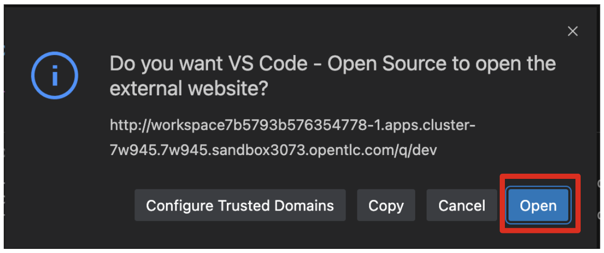

Quarkus Extensions
Quarkus is a Kubernetes Native Java stack tailored for GraalVM & OpenJDK HotSpot, crafted from the best of breed Java libraries and standards. Amazingly fast boot time, incredibly low RSS memory (not just heap size!) offering near instant scale up and high density memory utilization in container orchestration platforms like Kubernetes. Quarkus uses a technique called compile time boot and offers a unified imperative and reactive programming model and a number of other developer features like Live Reload to bring real joy to your development.
Red Hat offers the fully supported Red Hat Build of Quarkus(RHBQ) with support and maintenance of Quarkus. In this workhop, you will use Quarkus to develop Kubernetes-native microservices and deploy them to OpenShift. Quarkus is one of the runtimes included in Red Hat Runtimes. Learn more about RHBQ.
Throughout this lab you’ll discover how Quarkus can make your development of cloud native apps faster and more productive.
If you’ve already completed the Quarkus Basic Hands-on Lab Today
If you have completed the Basic lab today, you can scroll/skip down to the List Extensions exercise to continue your Quarkus lab. If not, then continue below:
First Step: Set Your Username!
Look in the box at the top of your screen. Is your username set already? If so it will look like this:

If your username is properly set, then you can move on. If not, in the above box, enter the user ID you were assigned like this:
This will customize the links and copy/paste code for this workshop. If you accidently type the wrong username, just select the green recycle icon to reset it.
Select-to-Copy
You will see various code and command blocks throughout these exercises which can be copy/pasted directly by selecting anywhere on the block of text:
/* A sample Java snippet that you can copy/paste by selecting */
public class CopyMeDirectly {
public static void main(String[] args) {
System.out.println("You can copy this whole class with a select!");
}
}Simply select once and the whole block is copied to your clipboard, ready to be pasted with CTRL+V (or Command+V on Mac OS).
There are also Linux shell commands that can also be copied and pasted into a Terminal in your Development Environment:
echo "This is a bash shell command that you can copy/paste by selecting"Access Your Development Environment
You will be using VS Code server based on Red Hat OpenShift Dev Spaces Changes to files are auto-saved every few seconds, so you don’t need to explicitly save changes.
To get started, {{ DS_URL }}[access the Red Hat OpenShift Dev Spaces instance^] and select Log in with OpenShift button:

Type in the following credentail:
-
Username:
{{ USER_ID }} -
Password:
{{ DS_USER_PASSWORD }}

|
In case you see the Authorize Access page as below, select Allow selected permissions button. 
|
Once you log in, you’ll be placed on the Create Workspace dashboard. Copy the following Git Repo URL and select Create & Open.

A new window or tab in your web browser will open automatically to showcase the progess about Starting workspace quarkus-workshop. It takes about 60 seconds to finish the process.
|
In case you see this information page, select |
After a few seconds, you’ll be placed in the workspace.

|
In case you see this infomation page, check on 
|
You’ll use all of these during the course of this workshop, so keep this browser tab open throughout. If things get weird, you can simply reload the browser tab to refresh the view.
Explore Project
Let’s take a look at the left Explorer. Your Quarkus project was already imported when the workspace was created.
When you select the pom.xml, you will see which version fo the Red Hat Build of Quarkus you will use for the workshop today.
The project also has
-
The Maven structure
-
An
org.acme.people.rest.GreetingResourceresource exposed on/hello, along with a simple test -
A landing page that is accessible on
http://localhost:8080after starting the application -
The application configuration file
-
Other source files we’ll use later
Navigate to src → main → java → org.acme.people.rest in the project tree and double select GreetingResource.java.
This class has a very simple RESTful endpoint definition:
@Path("/hello")
public class GreetingResource {
@GET
@Produces(MediaType.TEXT_PLAIN)
public String hello() {
return "hello";
}
}It’s a very simple REST endpoint, returning "hello" to requests on /hello.
|
Compared to vanilla JAX-RS, with Quarkus there is no need to create an |
Running the Application in Live Coding Mode
Live Coding (also referred to as dev mode) allows us to run the app and make changes on the fly. Quarkus will automatically re-compile and reload the app when changes are made. This is a powerful and efficient style of developing that you will use throughout the lab.
You can always use the mvn (Maven) commands to run Quarkus apps, but we’ve created a few helpful tasks on the VS Code.
Navigate the Command Palette menu or the press Control+SHIFT+P (or Command+SHIFT+P on macOS).

Delete < then type task in the command palette. Make sure to append a space character after the task.
Select the che task to show the Quarkus tasks up.
Start the Live Coding by selecting che: 02. Start Live Coding.
A terminal opens automatically to run the Quarkus Dev Mode.

This will compile and run the app using mvn compile quarkus:dev in a Terminal window. Leave this terminal window open throughout the lab! You will complete the entire lab without shutting down Quarkus Live Coding mode, so be careful not to close the tab (if you do, you re-run it). This is very useful for quick experimentation.
|
The first time you build the app, new dependencies may be downloaded via maven. This should only happen once, after that things will go even faster |
|
You may see WARNINGs like |
You should see:
INFO [io.quarkus] (Quarkus Main Thread) people 1.0-SNAPSHOT on JVM (powered by Quarkus xx.xx.xx.) started in 2.510s. Listening on: http://0.0.0.0:8080
INFO [io.quarkus] (Quarkus Main Thread) Profile dev activated. Live Coding activated.
INFO [io.quarkus] (Quarkus Main Thread) Installed features: [cdi, resteasy-reactive, smallrye-context-propagation, vertx]
--
Tests paused
Press [r] to resume testing, [o] Toggle test output, [h] for more options>Note the amazingly fast startup time! The app is now running locally (within the Che container in which the workspace is also running). localhost refers to the Kubernetes pod, not your laptop (so therefore opening localhost:8080 in your browser will not do anything).
You can also see Tests paused by default when a Quarkus application gets started. We will learn more details in the Testing Quarkus App lab.
VS Code will also detect that the Quarkus app opens port 5005 (for debugging) and 8080 (for web requests). Close the popup not to add a port 5005, but when prompted, Open In New Tab to open a port 8080, which opens a new tab in your web browser:
|
In case you see the popup message below, select

|
You should see the default Quarkus welcome page:
Open a new terminal by selecting + icon:

and invoke the hello endpoint using the following curl command:
curl http://localhost:8080/helloYou can also add /hello to the Quarkus welcome page to see the same result as the curl command:

When you fail to access the hello page, make sure to call the URL using http protocol.
Now, let’s exercise the live reload capabilities of Quarkus. In VS Code, open the GreetingResource.java file (in src/main/java/org/acme/people/rest) and change return "hello"; to return "hola"; in the editor. After making this change, reload the same brower tab that was showing hello. It should now show hola.
Wow, how cool is that? Supersonic Subatomic live reload! Go ahead and change it a few more times and access the endpoint again. And we’re just getting started. Leave the app running so we can continue to change it on the fly in the next section.
|
|
|
This will also listen for a debugger on port |
In case you haven’t done Module 1 (Basic) today
If you are only doing the Advanced lab today, or you didn’t quite complete the Basic Lab, you’ll need to login to OpenShift, then build and deploy the application needed for the exercises using a utility script provided. Follow the steps below to do this.
Login to OpenShift
Although your VS Code is running on the Kubernetes cluster, it’s running with a default restricted Service Account that prevents you from creating most resource types. So we’ll log in with your workshop user. Execute the following command in the VS Code terminal:
oc login -u {{ USER_ID }} -p {{ OPENSHIFT_USER_PASSWORD }} https://openshift.default.svc:443You should see:
Login successful.
You have access to the following projects and can switch between them with 'oc project <projectname>':
* {{ USER_ID }}-devspaces
{{ USER_ID }}-project
Using project "user1-devspaces".
Welcome! See 'oc help' to get started.Congratulations, you are now authenticated to the OpenShift server via the CLI. We’ll use the prettier web console later on in this lab.
Deploy app
Deploy the people microservice by executing the following shell script in a CodeReady Workspaces Terminal:
sh scripts/deploy-people.sh {{ USER_ID }}Wait for the script to complete before continuing.
When the script completes, the app is deployed to OpenShift. You can see it in the {{ CONSOLE_URL}}[OpenShift Console^]. Login with your assigned username and password (e.g. {{ USER_ID }}/{{ OPENSHIFT_USER_PASSWORD }}):

Once logged in, select the name of your project ({{ USER_ID }}-project):
Switch to the Developer Perspective using the upper-left drop-down:

This provides a developer-centric Topology view of applications deployed to the project. You can see the single people deployment that we just deployed earlier using the CLI:

List extensions
Ready to dive into advanced Quarkus development? Let’s learn how easily Quarkus allows developers to extend for building a vibrant ecosystem.
Think of Quarkus extensions as your project dependencies. Extensions configure, boot and integrate a framework or technology into your Quarkus application. They also do all of the heavy lifting of providing the right information to GraalVM for your application to compile natively.
Quarkus aims to provide a support for a full extension ecosystem, to make it easy to discover and consume 3rd party extensions, as well as providing easier version management.
Retrieve the list of possible extensions using the Maven plugin. Run this in the Terminal:
mvn quarkus:list-extensionsYou can see the list of ~538 different extensions available to you in the output:
[INFO] Current Quarkus extensions available:
[INFO]
[INFO] ✬ ArtifactId Extension Name
[INFO] ✬ blaze-persistence-integration-quarkus Blaze-Persistence
[INFO] ✬ camel-quarkus-activemq Camel ActiveMQ
[INFO] ✬ camel-quarkus-amqp Camel AMQP
[INFO] ✬ camel-quarkus-arangodb Camel ArangoDb
[INFO] ✬ camel-quarkus-as2 Camel AS2
[INFO] ✬ camel-quarkus-atlasmap Camel AtlasMap
[INFO] ✬ camel-quarkus-atom Camel Atom
[INFO] ✬ camel-quarkus-attachments Camel Attachments
[INFO] ✬ camel-quarkus-avro Camel Avro
[INFO] ✬ camel-quarkus-avro-rpc Camel Avro RPC
[INFO] ✬ camel-quarkus-aws2-athena Camel AWS 2 Athena
[INFO] ✬ camel-quarkus-aws2-cw Camel AWS 2 CloudWatch
...Adding an extension is similarly easy. With Maven, you can add extensions using mvn quarkus:add-extension -Dextensions="extension1,extension2,…". The extension name can be the maven groupId/artifactId name of the extension: e.g. io.quarkus:quarkus-agroal. But you can pass a partial name and Quarkus will do its best to find the right extension. For example, agroal, Agroal or agro will expand to io.quarkus:quarkus-agroal. If no extension is found or if more than one extensions match, you will see a warning and a list of possible matches in the command result.
When you run Quarkus applications, the list of extensions enabled are shown in the output, such as:
INFO [io.quarkus] (main) Installed features: [cdi, kubernetes, resteasy-reactive, smallrye-context-propagation, vertx]|
In Live Coding mode, Quarkus will monitor the state of |
Add an extension
Later on in this lab we’ll be using Jackson serialization support for RESTEasy Reactive, so let’s add that extension here. In the Terminal, run the following command to add the RESTEasy Reactive Jackson extension to your project:
mvn quarkus:add-extension -Dextensions="resteasy-reactive-jackson"You should see
[INFO] [SUCCESS] ✅ Extension io.quarkus:quarkus-resteasy-reactive-jackson has been installedThe result of this command is a new <dependency> added to our pom.xml which you can see by looking at the differences you’ve made up till now.
Select the Source Control view and then select pom.xml:
You’ll see all the changes to pom.xml since you started, including the new extensions we’ve added.
You may see other apparent differences due to whitespace and/or the re-shuffling of XML elements when you ran mvn quarkus:add-extension.
There are many other git and GitHub operations like this one that you can perform directly in the IDE for real projects (e.g. committing, branching, merging, push/pull, log viewing, etc).
Go back to the Explorer view in CodeReady (to see the tree of files once again).
Writing your own extension
Quarkus extensions add a new developer focused behavior to the core offering, and consist of two distinct parts, buildtime augmentation and runtime container. The augmentation part is responsible for all metadata processing, such as reading annotations, XML descriptors etc. The output of this augmentation phase is recorded bytecode which is responsible for directly instantiating the relevant runtime services.
This means that metadata is only processed once at build time, which both saves on startup time, and also on memory usage as the classes etc that are used for processing are not loaded (or even present) in the runtime JVM.
Writing a Quarkus extension is beyond the scope of this lab, so consult the Extension Author’s Guide for more detail on writing your own extension.
Congratulations
Quarkus aims to provide a support for a full extension ecosystem, to make it easy to discover and consume 3rd party extensions, as well as providing easier version management.
We’ll be adding additional extensions as we go along in other sections of this workshop.